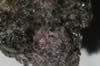

|
|
(For further information on spectroscopy, see:
http://speclab.cr.usgs.gov)
TITLE: Almandine WS475 Garnet DESCRIPT
DOCUMENTATION_FORMAT: MINERAL
SAMPLE_ID: WS475
MINERAL_TYPE: Nesosilicate
MINERAL: Almandine (Garnet group)
FORMULA: (Fe+2)3Al2(SiO4)3
FORMULA_HTML: Fe+23Al2(SiO4)3
COLLECTION_LOCALITY: Jackson Co., North Carolina
ORIGINAL_DONOR: Wards Science
CURRENT_SAMPLE_LOCATION: USGS Denver Spectroscopy Laboratory
ULTIMATE_SAMPLE_LOCATION: USGS Denver Spectroscopy Laboratory
SAMPLE_DESCRIPTION:
Forms series with Pyrope and with Spessartine.
Optical examination gives the following mode:
95 vol% almandine
4 vol% biotite
1 vol% magnetite
Rose pink color in hand sample, original sample was a almandine-biotite schist. Sample was hand-picked and sieved so that current sample consists of < 250-µm grain fraction. Sample could benefit from more handpicking under a microscope. Biotite forms almandine coated flakes.
IMAGE_OF_SAMPLE:

END_SAMPLE_DESCRIPTION.
END_SAMPLE_DESCRIPTION.
XRD_ANALYSIS:
40 kV - 30 mA, 7.3-9.5 keV
File: alma475.out, *_mdi (smear mount on quartz plate)
References: Borg and Smith (1969), JCPDS #9-427, DHZ, v. 1a (1982),
Huebner's reference patterns
Found: Garnet, minor mica, trace kaolin mineral, unidentified
reflection at 4.59 Angstroms
Comment: All reflections sharp, indicating good crystallinity. Resolved three distinct garnet compositions; the major garnet has ao=11.51 Angstroms, consistent with almandine-rich garnet; the minor garnets have larger ao (to 11.57 Angstroms) indicating solid solution, perhaps with spessartine or grossular. Mica identification was based on two basal reflections, each a doublet (two mica compositions?). The kaolinite mineral identification was also based on two basal reflections; that at 7 Angstroms is also a doublet! This is an unusual assemblage; was the sample contaminated during collection or preparation?
J.S. Huebner, J. Pickrell, and T. Schaefer, 1994, written communication.
END_XRD_ANALYSIS.
COMPOSITIONAL_ANALYSIS_TYPE: EM(CDS) # XRF, EM(WDS), ICP(Trace), WChem
| COMPOSITION KEYWORD |
Oxide ASCII |
Amount | Weight Percent, % |
Oxide html |
|---|---|---|---|---|
| COMPOSITION: | SiO2 | 37.98 | wt% | SiO2 |
| COMPOSITION: | TiO2 | 0.00 | wt% | TiO2 |
| COMPOSITION: | Al2O3 | 22.14 | wt% | Al2O3 |
| COMPOSITION: | Cr2O3 | 0.01 | wt% | Cr2O3 |
| COMPOSITION: | V2O3 | 0.01 | wt% | V2O3 |
| COMPOSITION: | FeO | 29.83 | wt% | FeO |
| COMPOSITION: | NiO | 0.01 | wt% | NiO |
| COMPOSITION: | MnO | 0.47 | wt% | MnO |
| COMPOSITION: | MgO | 7.35 | wt% | MgO |
| COMPOSITION: | CaO | 1.71 | wt% | CaO |
| COMPOSITION: | Total | 99.52 | wt% | |
| COMPOSITION: | O=Cl,F,S | wt% | #correction for Cl, F, S | |
| COMPOSITION: | New Total | 99.52 | wt% |
COMPOSITION_TRACE: None
COMPOSITION_DISCUSSION:
Microprobe analyses are average of five spot locations done on
different grains. All Fe is expressed as FeO, and the Fe2O3 content
was not determined.
END_COMPOSITION_DISCUSSION.
MICROSCOPIC_EXAMINATION:
Optical examination gives the following mineral mode:
95 vol% pyrope
4 vol% biotite
1 vol% magnetite or other opaque
This sample has a bimodal grain size distribution:
1st population: avg grain size = 200 µm
2nd population: avg grain size = 25 µm
avg. grain size = 199 µm
Smaller grains partially coat larger grains. G. Swayze
Fine pyrope grains adhere to biotite contaminant surfaces. Some pyrope grains (~10%) have dark honey color perhaps due to mafic inclusions. Most grain surfaces have conchoidal fractures since garnet has no cleavage; parting surfaces not apparent in this sample.
END_MICROSCOPIC_EXAMINATION.
SPECTROSCOPIC_DISCUSSION:
END_SPECTROSCOPIC_DISCUSSION.
SPECTRAL_PURITY: 1b2b3b4_ # 1= 0.2-3, 2= 1.5-6, 3= 6-25, 4= 20-150 microns
| LIB_SPECTRA_HED: | where | Wave Range | Av_Rs_Pwr | Comment |
|---|---|---|---|---|
| LIB_SPECTRA: | splib04a r 151 | 0.2-3.0µm | 200 | g.s.= 199 µm |
| LIB_SPECTRA: | splib05a r 208 | 0.2-3.0µm | 200 | g.s.= |
| LIB_SPECTRA: | splib06a r 685 | g.s.= | ||
| LIB_SPECTRA: | splib06a r 699 | g.s.= |
{kind=link}